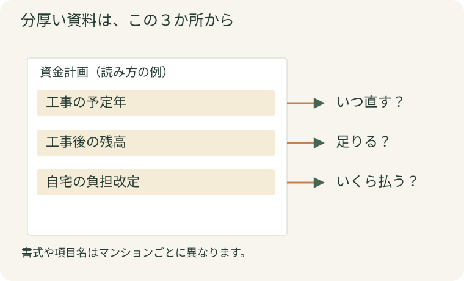
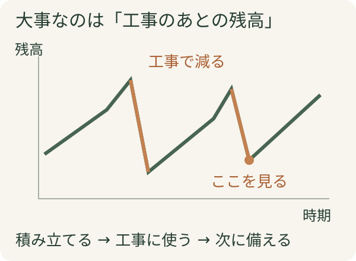
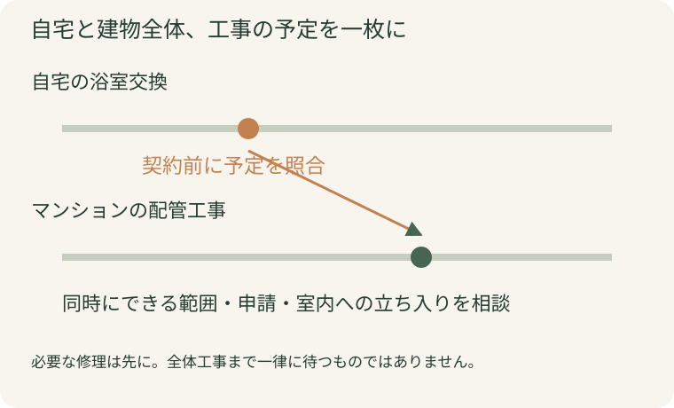

総会の封筒を開けたものの、細かな表を見てそっと閉じてしまった。毎月の修繕積立金は払っているけれど、「うちのマンション、大丈夫かな」と聞かれると答えに迷う。そんな方は、まず三つだけ見てみませんか。
次の大きな工事はいつか。積立金が足りなくなる年はあるか。自分の毎月の負担は変わるか。 この三つが分かると、資料の数字が、自分の暮らしと家計の話につながります。キッチンや浴室のリフォームを考えている方にも、先に見ておきたい資料です。
分厚い総会資料は、まず三つの数字から
公開日：
 文｜エイスケ（住宅と教育の専門家）
文｜エイスケ（住宅と教育の専門家）

総会の封筒を開けたものの、細かな表を見てそっと閉じてしまった。毎月の修繕積立金は払っているけれど、「うちのマンション、大丈夫かな」と聞かれると答えに迷う。そんな方は、まず三つだけ見てみませんか。
次の大きな工事はいつか。積立金が足りなくなる年はあるか。自分の毎月の負担は変わるか。 この三つが分かると、資料の数字が、自分の暮らしと家計の話につながります。キッチンや浴室のリフォームを考えている方にも、先に見ておきたい資料です。
長期修繕計画は、建物の外壁や屋上、設備を、いつ、どのくらいの費用で直していくかをまとめたものです。修繕積立金は、その工事に備えて区分所有者が積み立てるお金。普段の清掃や管理などに使う「管理費」とは、役割が異なります。
まずは、封筒の中に次の資料があるか探してみましょう。資金計画は、長期修繕計画の後ろに一緒に載っていることもあります。
| 資料 | ここを読む | 分かること |
|---|---|---|
| 最新の長期修繕計画 | 工事の項目と予定年 | 次に何を直すのか |
| 資金計画・収支の見通し | 各年の積立残高と収入・支出 | 将来の工事費を賄える見込みか |
| 直近の総会議案書・議事録 | 積立額の改定、一時金、借入の議案と決議 | 検討中か、すでに決まったことか |
見当たらなければ、管理会社や理事会へ「最新の長期修繕計画と資金計画を見たい」と伝えれば大丈夫です。資料を開いたら、作成日・見直し日も確認してください。古い計画だけでは、その後の工事費の変化や決議が反映されていないことがあります。

工事の一覧では、外壁、防水、給排水管、エレベーターなどの項目が並びます。最初から一行ずつ理解しようとせず、支出が大きくなる年に印をつけてみましょう。その年にどんな工事が予定されているかを追うと、全体像がつかめます。
次に、自分の暮らしに影響する工事を探します。外壁工事なら足場やベランダの使用、給排水管なら室内への立ち入りや断水などが関わることがあります。具体的な影響は、工事内容が決まった段階で確認します。
例えば「来年は外壁」「数年後に給排水管」という予定が分かるだけでも、自宅の改修や家具の買い替えを考える材料になります。計画上の予定と、工事として決議済みの内容は区別してメモしましょう。
表を読むときは、最初に右上などにある金額の単位も確認しましょう。「千円」表示の1,500は150万円です。表の数字を円に読み替えてみると、工事費の大きさをつかみやすくなります。
「いま積立金がたくさんある」と聞くと安心しがちですが、大きな工事をすれば残高は減ります。見たいのは、資金計画の「修繕積立金残高」「繰越金」などの行。左から右へ、将来まで追ってみてください。
工事の後、残高がマイナスになる年はありませんか。 もしあれば、その計画の条件では資金が不足する見込みです。積立額の見直し、一時金、借入など、どう対応する計画なのかを質問しましょう。
ここで使うのは、マンション全体の工事費と、管理組合全体の積立残高です。自宅の毎月の支払いは、別のメモにしておくと整理しやすくなります。
また、その年の収支が赤字でも、積み立ててきた残高で賄える場合があります。「その年に入るお金と出るお金の差」と「工事後に残るお金」は別の数字。まず残高の行を追うと、慌てずに確認できます。
残高がプラスでも、その前提は確認したいところです。「将来、積立額を引き上げる」「一時金を集める」といった条件が含まれていないか。最近の工事費を踏まえて計画が見直されているか。収支表の数字と、その下にある注記をセットで読むのがコツです。

たとえば自宅の積立金が月1万5,000円から2万円になるなら、増える負担は月5,000円、１年で６万円です。これは計算の例ですが、月額の差を年額に直すと、自宅のリフォームに回せるお金を考えやすくなります。
修繕積立金には、期間中の負担をならす考え方や、段階的に増額する計画などがあります。今の月額だけで判断せず、将来の自宅の負担がどう変わるのかを見ておきましょう。
確認するのは、この三点です。
近所のマンションより高いと、理由が気になるものです。建物の規模、設備、機械式駐車場の有無などで必要な費用は変わります。国のガイドラインは判断の参考になりますが、「この積立額には、どの工事や設備の費用が含まれていますか」と聞くと、自宅の負担の理由をつかみやすくなります。
自宅のリフォーム予算を考える際も、積立額の改定や一時金を含めておくと、後から家計が窮屈になるのを避けやすくなります。
浴室をきれいにした直後に、配管工事のためにもう一度工事が必要になる。そうした行き違いを減らすために、契約の前に共用部の工事予定を施工店へ見せましょう。
| 自宅でしたいこと | 先に確認すること | 聞く相手 |
|---|---|---|
| 浴室・キッチンを交換したい | 共用・専有の配管工事の範囲と予定。今回一緒に確認できる配管はあるか | 管理会社・理事会と施工店 |
| 窓の寒さや結露を改善したい | サッシの改修予定と、内窓工事の申請・取り付け条件 | 管理会社・理事会と施工店 |
| 床を張り替えたい | 遮音性能などの規約、工事の申請方法 | 管理会社と施工店 |
窓のサッシや外壁などは共用部分に当たることがあり、専有部の工事にも申請や規定があります。自分で決められる範囲を、実際の管理規約・使用細則で確認してください。
予定が数年先だからといって、傷んだ設備の修理まで待つことはありません。今困っている症状と全体の工事予定を伝え、必要な修理と、時期を合わせられる改修を分けて相談しましょう。

分からない言葉が残っていても、質問して大丈夫です。まずは次の三問を、そのまま管理会社や理事会へ伝えてみてください。
① 次の大きな工事は、いつ、何をする予定ですか？
② その工事後も積立金は足りる計画ですか？ 増額や一時金が前提になっていますか？
③ 自宅のリフォームを考えています。先に確認する規約や、時期を合わせたほうがよい工事はありますか？
回答は「予定」「検討中」「決議済み」に分けてメモしておくと、家族や施工店とも話を共有しやすくなります。
「自宅の浴室交換を考えています。配管工事の予定と、修繕積立金の改定予定が分かる最新資料を見せてください」。この一言からで大丈夫です。
Q. 積立金の残高が多ければ安心ですか？ 次の工事費と、その後の残高まで見て判断します。将来の増額や一時金が資金計画に含まれているかも確認しましょう。
Q. 国の目安より低いと、すぐ値上げになりますか？ 目安だけで自動的に決まるものではありません。実際の工事計画と資金の見通しをもとに、管理組合で検討・決議していきます。
Q. 水まわりの工事は、大規模修繕と同時がいい？ 大規模修繕の内容に給排水管が含まれるか、室内工事と関係する範囲はどこかを先に確認します。現在の傷み具合も踏まえ、管理会社と施工店に相談しましょう。
共用部の給排水管、窓・サッシ、専有部の水まわり設備、外壁・屋上防水
部屋・建材・設備から機能を確かめる ↗関連記事
この記事を書いた人｜エイスケ
1986年生まれ。実家の工務店・不動産に10年間従事したのち、教育の世界へ。住宅と教育、両方の視点から「豊かな暮らし」をテーマに執筆します。※本コラムは筆者個人の見解・経験に基づくものです。最終的な判断は各分野の専門家にご相談ください。